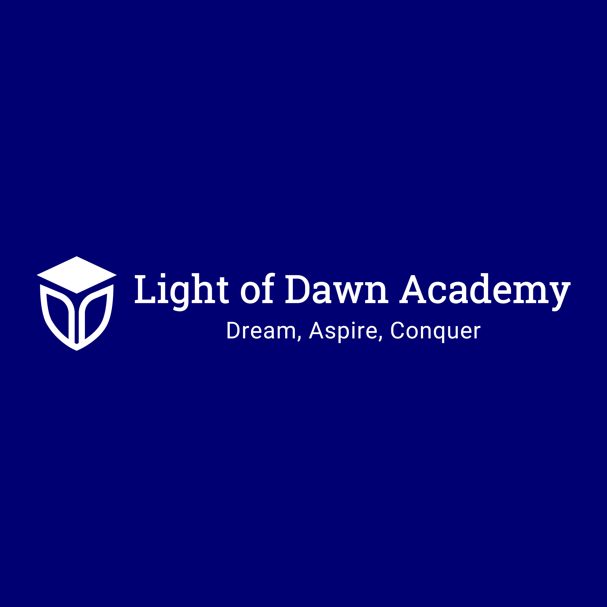
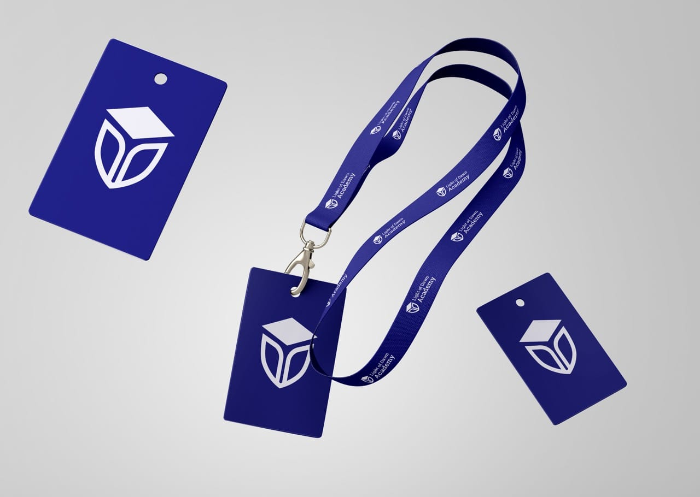
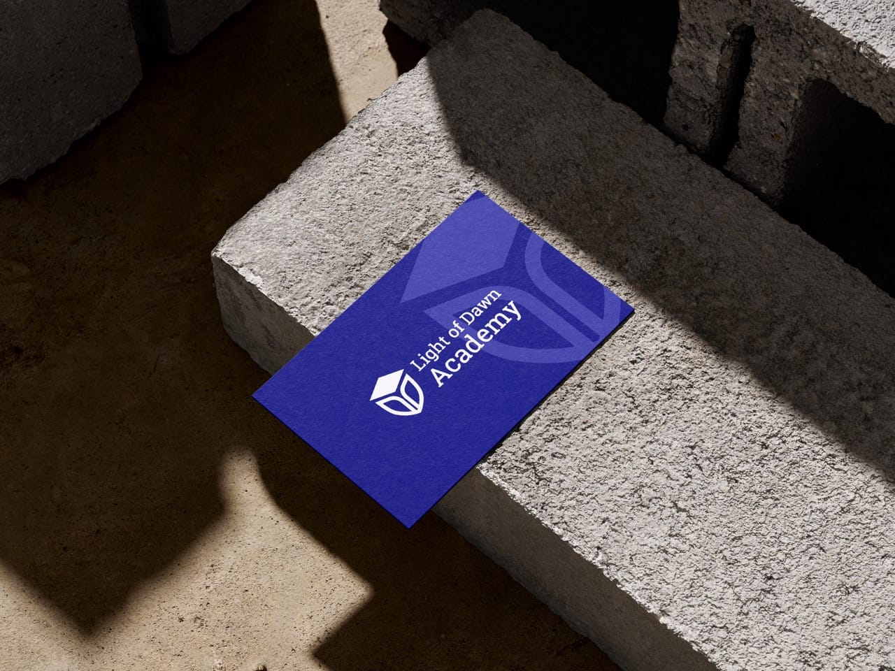
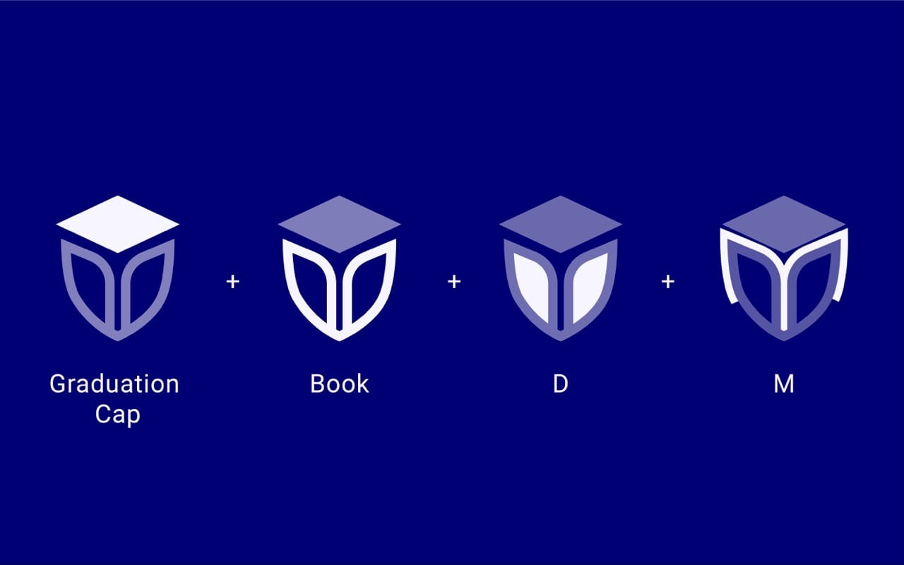
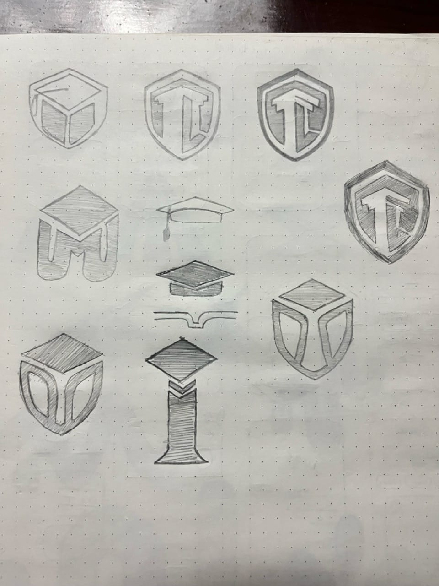

A shield, a book, and a graduation cap: one mark that signals trust for a global skill development academy.
I designed the logo and brand identity for Light of Dawn Academy, a global skill development platform focused on soft skills training, personal growth, and interview preparation. The mark combines a shield, book, and graduation cap to communicate protection, learning, and achievement. It serves students, professionals, and career seekers, and adapts across certifications, digital platforms, presentations, and marketing use.

The brief: a training brand that reads as trustworthy at first glance
Light of Dawn Academy is a global skill development platform built around soft skills training, personal growth, and interview preparation. Its audience spans students, professionals, and career seekers, so the identity had to feel credible and professional without turning cold or generic. The academy needed a logo that embodied learning, trust, and achievement while staying aspirational and approachable. The goals were specific: represent trust, growth, and achievement through symbolic design, use universal educational cues that connect with learners at every stage, and hold up across digital and print contexts.


The design: three symbols, one meaning
The identity is built from three core elements. A shield stands for protection, resilience, and the academy's promise to equip learners, a book anchors the mark in foundational learning and personal development, and a graduation cap signals academic achievement and goal fulfillment. Together they read as a single, coherent emblem rather than a stack of icons. The palette pairs a blue primary color for trust, wisdom, and intelligence with white for clarity and openness, set against a professional sans-serif that balances formality and approachability. The work moved through a clear sequence: brand discovery, concept development, symbol design, a typography and color system, testing and application, then delivery.


The result: a versatile, values-driven identity
The finished branding carries the academy's values directly through its symbolism, building trust with students, professionals, and career seekers evaluating a training provider. The system is easily adaptable across certifications, digital platforms, presentations, and marketing use, with responsive scaling from small app icons to large banners. Light of Dawn Academy now has a refined, trustworthy identity that will scale with its global mission, inspiring confidence in every learner they reach.